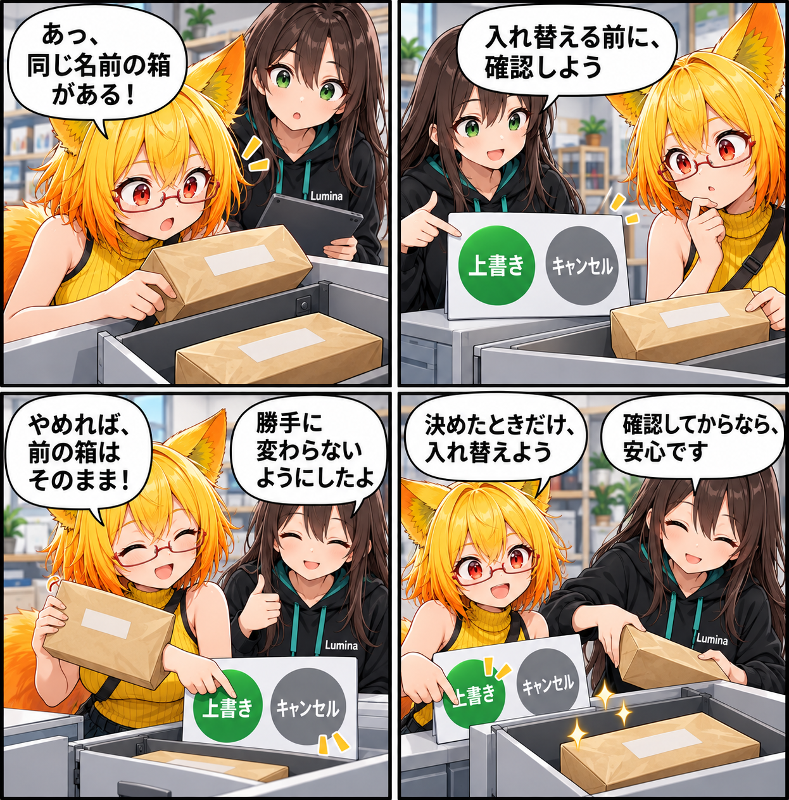

2026.10.09 / Development Log
上書きする前に、ひと呼吸おく日
VAB・VBGの変換で同名の出力を上書きする前に確認し、既存ファイルを意図せず変えない経路を整えました。
記事種別はdevelopment。集計期間は2026-10-08 03:00:00 JST〜2026-10-09 02:59:59 JST。参照ブランチはmain、終了時点のHEADは386461e258d2e9be11bd273dc782aa1310a3354b（同名の変換出力を上書きする前に確認）です。対象は10コミットです。未コミット差分は実績に含めていません。

同名の出力を、確認なしで置き換えない
PrefabからVABを作る入口、UnityPackageからVABを作る入口、背景からVBGを作る入口で、同じ名前の出力ファイルがすでにある場合に確認ダイアログを出すようにしました。生成を続けるかキャンセルするかを、書き込みの前に選べます。
キャンセルなら、既存ファイルはそのまま
上書きを選ばなければ変換を中止し、既存のVABやVBGへ手を加えません。うっかり同じファイル名を指定しても、現在の出力を意図せず置き換えないことを優先しました。
上書きを選んだときも、安全に入れ替える
置換を明示的に選んだ場合は、まず一時ファイルとしてアーカイブを作成して検証し、その後に既存ファイルと置き換えます。置換成功後は一時バックアップを残さないようにしています。既存VBGで、明示的な置換なしでは拒否され、置換ありでは完了することをエディタテストでも確認しました。
4コマの裏話
今回は「確認→選択→完了」の小さな安心を、同名の箱が並ぶ引き出しで表しました。変換を止めるためではなく、続ける判断を自分で選べるようにする改善です。
まとめ
VAB・VBG変換で同名の出力があるときは、先に確認してから置き換えるようになりました。キャンセルなら既存ファイルを守り、上書きを選んだときだけ検証済みの出力へ安全に入れ替えます。
本日のひとこと
上書きは、ひと呼吸おいてから。